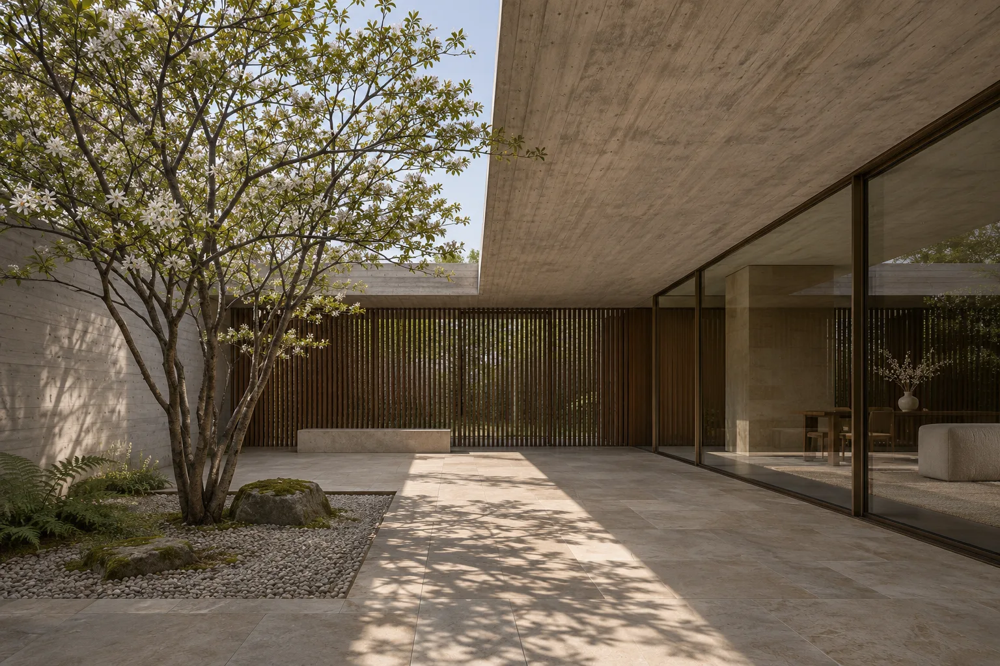

Жилая архитектура
Тихий двор
Мы собрали дом вокруг одного дерева. Остекление обращено во двор, а бетонная консоль затеняет проход. Из общих комнат видно, как солнце пересекает двор в течение дня.
Замысел проекта
Мы оставили двор открытым, чтобы дерево стало частью повседневного маршрута. Глухие стены закрывают частные комнаты, деревянные экраны фильтруют свет, а каменный пол продолжается до границы сада.